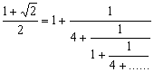

連續分式
程式編寫日期: 2006年6月30日
| 1 | ÷ | ( | ANS | - | ( | 10x | 1 |
| 1 | + | 5 | 0 | + | ANS | - | 10x |
| 1 | 1 | - | 5 | 0 | STO F1 或 F2 | ||
註: 連續分式的形式如下:
例題1: 以連續分式表示 π 值。
按 π = (顯示 3.14159) RCL F1 = (顯示 7.06251) = (顯示 15.9966) = (顯示 1.003417)
= (顯示 292.62402)……
所以答案為

例題2: 以連續分式表示 5/16 值。
按 5 ab/c 16 = (顯示5/16，沒有整數部份表示為0)
再按 RCL F1 = (顯示3/1/5) = (顯示5) = (Error 2表示計算完結)
所以答案為

例題3: 以連續分式表示 25/16 值。
按 25 ab/c 16 = (顯示1/9/16)
再按 RCL F1 = (顯示1/7/9) = (顯示1/2/7) = (顯示 3/1/2) = (顯示2) = (Error 2表示計算完結)
所以答案為

例題4: 試計算以下算式的連續分式

按 ( 1 + √2 ) ÷ 2 = (顯示1.2071) RCL F1 = (顯示4.8284) = (顯示1.2071) = (顯示4.8284) ....
所以答案為

註: 這個程亦可以計算無理數的連續分式，不過由於計數機的準確度有限，誤差會隨計算的項數而增加，因此較後的項(對整個的值影響很少的項)有可能出現錯誤。